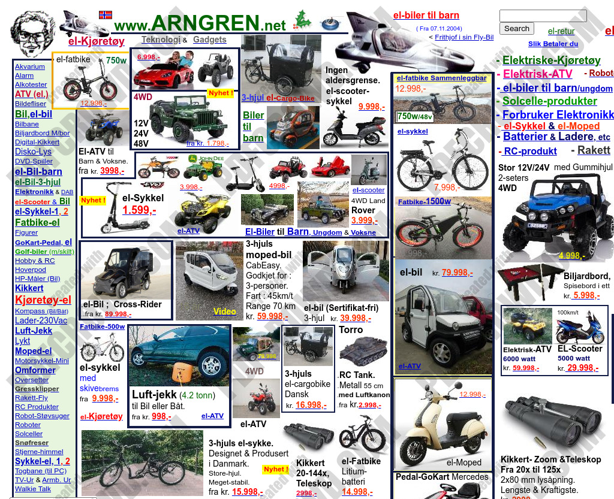

Screenshot

A glimpse of Arngren.net — one of the most infamous examples of bad web design.
What Makes Arngren.net So Ugly?
- Overloaded Layout: The homepage is flooded with images, text, and ads all crammed together.
- No Visual Hierarchy: Users’ eyes don’t know where to look — everything screams for attention.
- Clashing Colors: Random color choices destroy consistency and readability.
- Outdated Design: The page feels like it’s stuck in the early 2000s.
- Non-Responsive: The layout completely breaks on mobile devices.
How I Would Improve Arngren.net
- Redesign the homepage using a clean grid layout with clear visual hierarchy.
- Use whitespace strategically to give elements room to breathe.
- Adopt a simple color palette (e.g., white, blue, and gray) for a modern aesthetic.
- Group related items into logical sections or product categories.
- Make the site mobile-responsive with flexible layouts and readable text sizes.
- Use high-quality images and consistent typography.
Lessons Learned
Arngren.net teaches us that web design is not just about content — it’s about clarity, usability, and balance. A well-designed website respects the user’s attention, provides focus, and creates a pleasant experience.